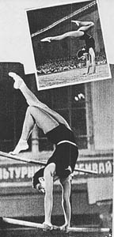

Tamara Manina (USSR)
1956 Olympic V and B Silver Medalist
1958 World AA Bronze Medalist

Medal Total
Olympic Games: 2
Gold, 3 Silver
World Championships: 2 Gold, 1 Silver, 2 Bronze
Tamara was born on September 16, 1934 in
Petrozavodsk and was raised in Leningrad. She and her family were
evacuated to Tashkent in late 1941, during the blockade. They returned to
Leningrad in 1944 and Tamara began gymnastics at a Pioneers' Palace.
In 1953 she won the USSR junior championships and was invited to become a member
of the senior national team. Tamara was a member of the 1956 and 1964
Soviet Olympic teams (a knee injury that happened two days before the team was to leave for Rome prevented her from competing at the 1960 Rome
Olympics). Her career ended at an exhibition in Vienna, where she
sustained another serious injury to her knee.
A 1965 graduate of the Leningrad Institute of Exact Mechanics and Optics (with a degree in mechanical engineering),
Tamara entered the prestigious Lesgaft Institute in 1966 and received her
master's degree in 1969. From 1969 to 1975 she taught at the Institute of
Physical Culture, and then worked in France for a year as the coach of their
national team. She is married to Valery Lutkov, a sports medicine
doctor. Their son, Valery, was a good tennis player who attained a master
of sports rating.
Competition Results
1953
1st Intl. Youth Games: 3rd V
Jr. USSR Championships: 1st AA
1954
World College Summer Games: 1st Team, 1st AA
1955
USSR Cup: 3rd AA
Warsaw International: 1st Team, 3rd AA
1956
Liberation Day International: 2nd AA, 2nd V, 2nb UB, 2nd FX, 3rd B
Olympic Games: 1st Team, 6th AA, 2nd V, 2nd B
USSR Championships: 1st AA, 1st B, 2nd FX, 5th V
USSR Cup: 3rd AA, 1st B, 1st FX
1957
Moscow Summer Sports Games: 1st Team, 3rd AA
USSR Championships: 4th AA
USSR Cup: 1st AA, 1st B, 2nd FX
1958
USSR Championships: 4th AA
World Championships: 1st Team, 3rd AA, 2nd V, 4th
B, 5th UB, 5th FX
1959
USSR Cup: 1st AA, 1st B, 2nd V, 5th FX, 6th UB
1961
USSR Cup: 2nd AA, 4th V, 4th B, 5th FX
1962
USSR Cup: 6th AA
World Championships: 1st Team, 5th AA, 3rd V
1963
USSR Championships: 4th AA, 1st V, 5th FX, 6th UB
USSR Cup: 3rd AA, 1st B, 2nd FX, 3rd UB
1964
Olympic Games: 1st Team, 14th AA, 2nd B
USSR Championships: 4th AA
USSR Cup: 4th AA, 2nd FX, 3rd B, 4th V
This page was created on September
06, 2004 and was last updated on February 14, 2026.
© Gymn Forum